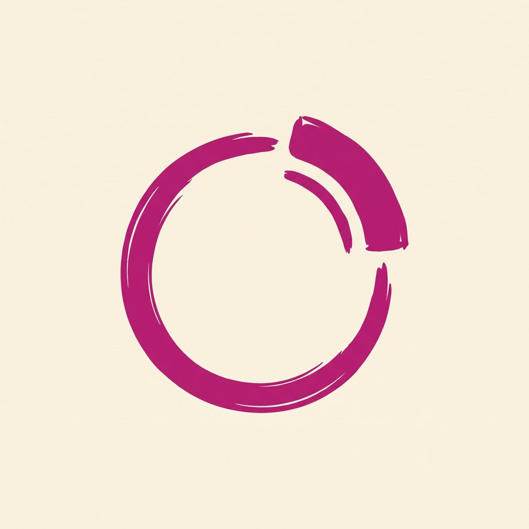
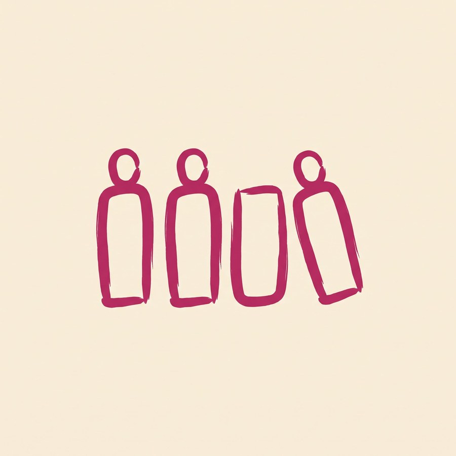
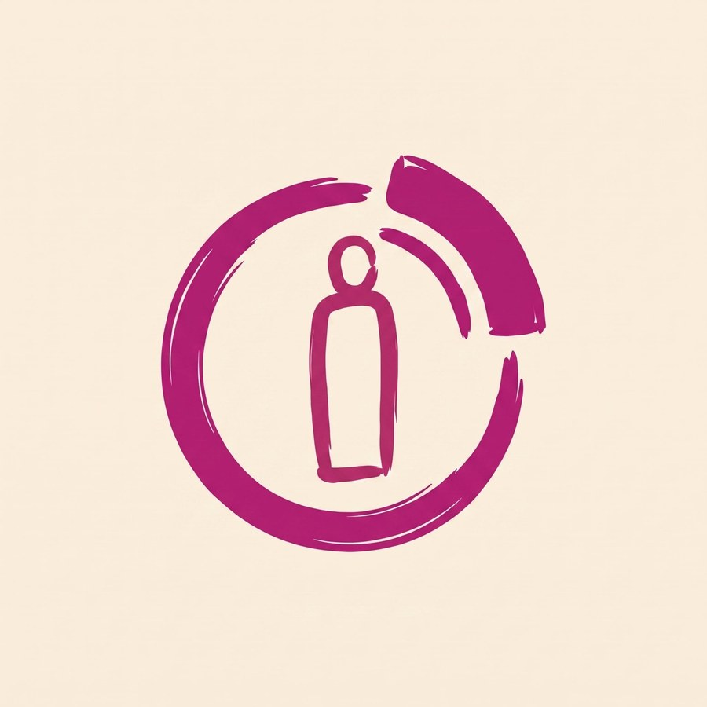
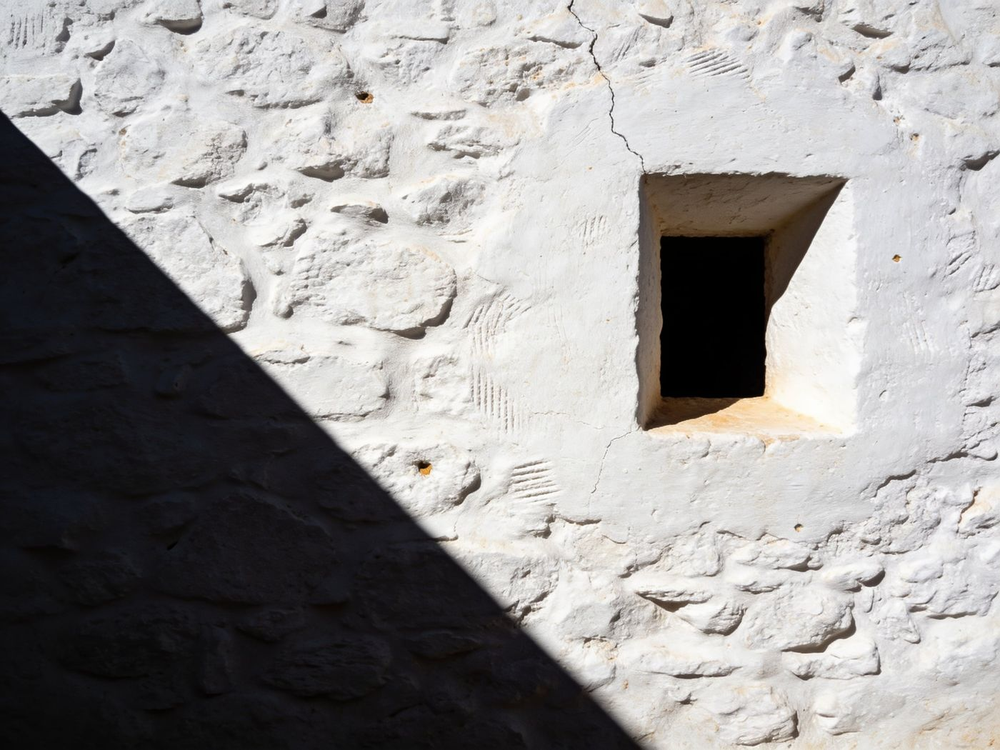

Marchio
Il cerchio di P esattamente com'era — stesso tratto, stesso segmento staccato in alto a destra — con dentro la figura nello stile di R: contorno sottile a pennello, testa tonda aperta, corpo vuoto. Nessuna altra modifica.


Identiche in tutto, cambia solo quanto è grande la figura dentro l'anello.

Versione 1
Versione 2
Il contorno sottile della figura è il punto debole in piccolo: sotto i 32px il tratto si chiude. In fase di disegno vettoriale si risolve ispessendo la linea nella versione ridotta.
